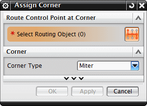
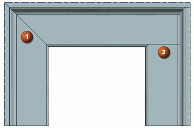
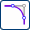

使用非圆形型材，比如槽钢或者 I 形梁时，通常需要把单独的型材段使用斜接或顶接焊接在一起。

要斜接或顶接拐角，使用指派拐角命令。

斜接 (1)
配合的型材在斜接处被切割，并彼此焊接在一起。切割角度由两条管线段在顶点处的角度决定。
顶接 (2)
在两个或多个型材的拐角处形成一个焊缝以进行焊接。要进行拐角顶接，选择拐角管线控制点，然后选择配合的型材。选择的第一个型材将作为工具型材，不会对这个型材进行任何拐角修改，后续选择的型材将作为目标型材，它将会被工具型材切割，以使它们对接。
译者注：在 NX 中文版中，将此处 Cope 翻译为手柄，Cope 字面意思为加上盖子，即顶接，多用于焊接场合。在翻译过程中，如果是对话框中出现的词，为了方便您对照进行选择，将保留原文，即手柄，一般解释时，翻译为顶接，后同，不再赘述。
|
应用模块 |
机械管线布置 + 平台 |
|
工具条 |
机械管线布置→路径下拉菜单→指派拐角  |
|
菜单 |
插入→管线布置路径→指派拐角 |
|
快捷菜单 |
右击两条直线段的顶点处的管线控制点→指派拐角 |